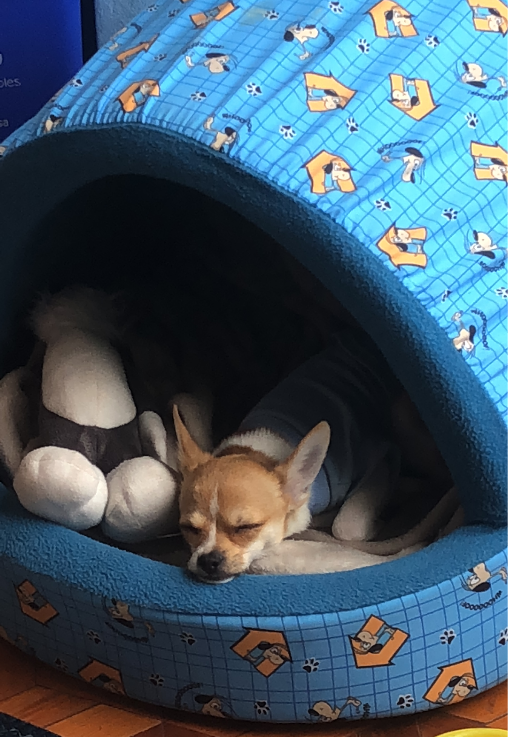

Mejor conocido como Max, este es mi perrito, es de raza Chihuahua, ya ha estado con la familia por un año y actualmente
tiene 1 año y medio de edad (04/04/2020)
Un buen perrito
Es un muy buen perrito, al menos con la mayoría, a extraños les ladra bien feo, pero solo cuando suben a la casa
(Donde supongo que mi perro piensa que es su territorio y por eso no quiere a gente extraña en el)
normalmente pasa conmigo, pero de ahí se la pasa paseando por la casa

¿Dónde encontrarlo?
Normalmente se lo encuentra en los muebles de la casa, acostado y tomando el sol (Se que suena raro, pero justo
donde está el mueble hay un vidrio que deja entrar la luz del sol en la mañana) o también puede estar en el cuarto
del autor en el mueble de autor (si ósea, en mi silla)
rara vez se lo ve en otros cuartos o en la cocina.

Estilo de vida
La mayoría del tiempo pasa en casa y además se nota que le gusta quedarse en casa, una vez lo sacamos a pasear y no
quería salir, cuando llego a una llanura en la montaña se lo vio feliz, correteaba por ahí y eso, pero se estresaba mucho
si no nos lograba ver, cuando vamos por ahí se siente un constante estrés en el perro,
Ya en casa todo eso se le pasa.
Tiene su cama al lado de la mía, no le falta agua ni comida, pero eso sí, no ha sido broma lo que dicen sobre los chihuahuas,
estos son unos perros aniñados, prefiere morirse de hambre a que tener que comer croquetas regulares, no sé cómo lo detecta,
talvez por el olor,
pero de ahí el solo come comida Premium, en otras palabras, las croquetas más caras disponibles (Actualmente come Purina
Pro Plan Adult (04/04/2020) )

Ah sí, le gustan los peluches.